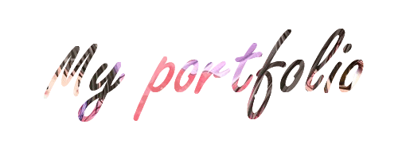

Portfolio
My name is Azhani Binti Mamat. I am now studying at Uitm Machang Kelantan with the Bachelor in Office System Management (Hons) under the Faculty of Business and Management. Usually, the method of learning and lecture between students and lecturers are face to face but today's situation has force several institutions to conduct and change the learning methods. It's a online distance learning through the whole semester and give so many benefits and also effects with it.
So this is the courses or subjects that I take for this semester which is semester 2
- Fundamentals of Business (ASM401)
- End User Applications (ASM452)
- Philosophy and Current Issues (CTU552)
- English for Critical Academic Reading (ELC501)
- Financial Management (FIN420)
- Introduction to Human Resource Management (HRM533)
- Basic Web Design and Content Management (IMS456)
- Business Law (LAW416)
This is the courses that I will take to complete my bachelor